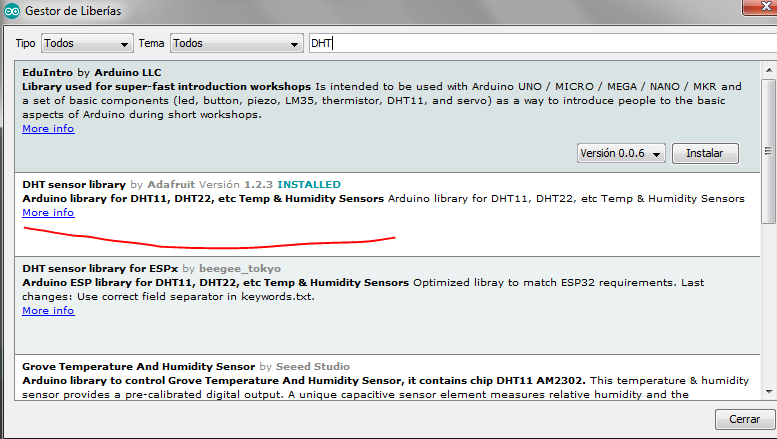
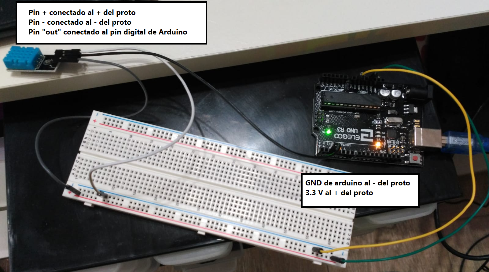
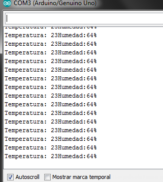

Para usar el sensor DHT11 tenemos que instalar una librería que nos ayuda a leer del sensor. Le damos a Herramientas > Administrar Bibliotecas y en el filtro de búsqueda ponemos "DHT" e instalamos la versión 1.2.3 NOTA: este código funciona para esta versión en concreto.
El circuito se conectaría así:
El código es el siguiente:
#include <DHT.h> // Librería para usar el sensor
int SENSOR = 2; // Pin conectado al sensor
int temperatura;
int humedad;
// Variable de tipo DHT definida en la libreria
// 1º parametro: El pin donde está conectado el sensor
// 2º) la marca del dispositvo : DHT11 normalmente
DHT dht( SENSOR, DHT11 );
void setup() {
Serial.begin(9600); // Para escribir por consola
dht.begin(); // Comenza a captar datos del exterior
}
void loop() {
humedad = dht.readHumidity(); // Lee la humedad
temperatura = dht.readTemperature(); // Lee la temperatura
Serial.print("Temperatura: " );
Serial.print(temperatura);
Serial.print("Humedad:");
Serial.print(humedad);
Serial.print("%");
Serial.print("\n");
delay(2000); // pequeña espera para que no se vuelva loco el puerto serial
}
El resultado es el siguiente:
